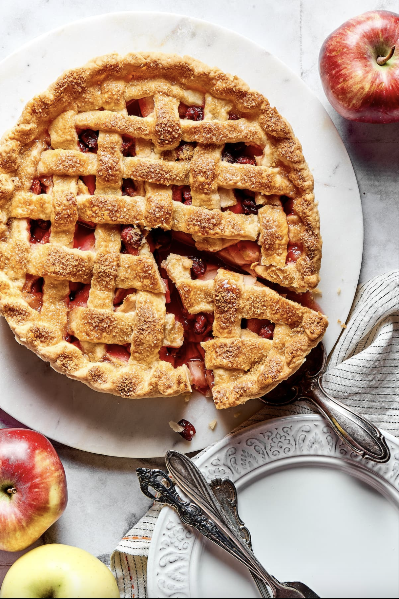

We love pies in this class and want as many in the world as possible. That is why we created this virtual assistant. We believe that more pies = more peace. Our goal is world peace through pies.
How many pies can you commit to making today?

You will need the following ingredients:
7 Apples
2 Pie Crusts
0.5 cup Sugar
1 tsp Cinnamon
1 egg
Directions:
Place oven rack in the center position and preheat the oven to 400°F
In a large bowl, combine the sliced apples, granulated sugar, light brown sugar, flour, cinnamon, nutmeg, and lemon juice and lemon zest; toss to coat evenly.
Spoon the apple filling over the bottom crust. Roll out the second disc of pie crust until it is ⅛" thick and lay it over the apple filling.
Brush the surface of the pie crust with the egg wash
Cover the edges with a pie shield or a strip of foil to keep them from over browning during the first 25 minutes.
Bake at 400°F (204°C) for 25 minutes.Carefully remove the pie shield, turn the oven down to 375° and continue to bake for an additional 30-35 minutes